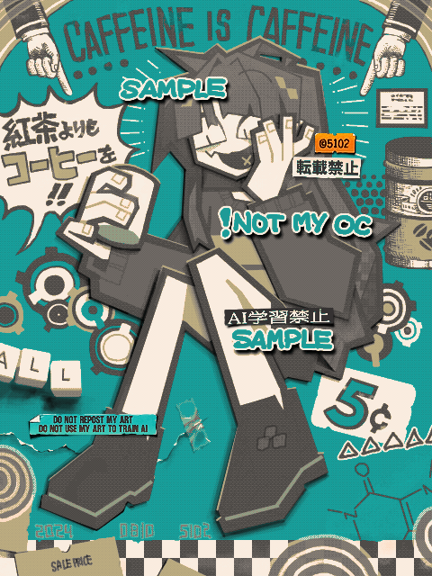

Made with
Tegaki Editor
手書きブログで描いたもの。
こちらはアートトレードの絵で、キャラクターはOptamellow氏のOCです。
ご存じの通り5102は無断生成AI反対派なんだけど、「じゃあお前もちゃんと自分で描いている証拠出せよ」と言われたらそういえば何も提出できるものを保存してないな、と気づいた。
がしかし、そもそも手書きブログは手書きブログのサイト内エディタで描いたものしか投稿できないので、それで十分「この絵は人間が描いてます」アピールになるんだよな。みんな手書きブログで絵を描こう！
2024/08/11